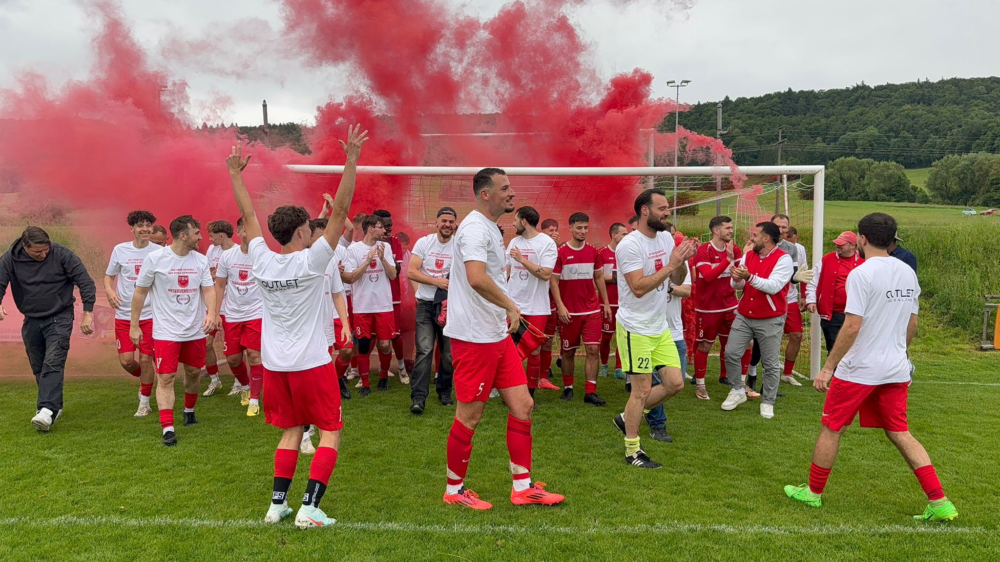

Mit 32 Punkten aus zwölf Spielen, einem Torverhältnis von 44:10 und ohne Niederlage holte sich die zweite Mannschaft des TSV Hessental den Meistertitel in der Reserveliga der Kreisliga A3. Das Team, das von den A-Jugend-Trainern Endrit Memeti und Michael Kolegov trainiert wurde, krönte die Saison am letzten Spieltag mit einem beeindruckenden 5:3-Derbysieg über den SC Steinbach-Comburg und erhielt beim Saisonabschluss unterm Einkorn den Meisterwimpel.


Neben einigen Absagen der Gegner gab es in dieser kleinen Liga auch beeindruckende Siege, wie das 8:2 in Rieden, den 4:1-Derbysieg in Steinbach oder den 7:0-Heimsieg, wiederum über den SV Rieden II.
Für den TSV Hessental II haben gespielt:
| Spieler | Einsätze | Tore |
|---|---|---|
| Ardian Sherifi | 10 | 2 |
| Daniel Fedoruk | 10 | – |
| Bassam Saeed Tamur | 9 | 1 |
| Denis Fries | 9 | – |
| Michael Kolegov | 9 | – |
| Marius Streng | 9 | – |
| Salam Saeed Tamur | 9 | – |
| Emanuel-Dumitru Cozma | 7 | 3 |
| Nik Sotnikow | 7 | 1 |
| Thomas Fertig | 7 | – |
| Jan Solonez | 5 | 6 |
| Shafi Jama | 5 | 4 |
| Amir Nabil | 4 | 5 |
| Linus Nestl | 4 | 3 |
| Valid Sharif | 4 | 2 |
| Edgar Pelimski | 4 | – |
| Mansour Ahmadi | 3 | 2 |
| Endrit Memeti | 3 | – |
| Thomas Herrmann | 2 | 2 |
| Sadri Sherifi | 2 | 2 |
| Emmanuel Matcus Quriri | 2 | 1 |
| Viktor Balz | 2 | – |
| Domenik Holub | 1 | 1 |
| Janne Lorenzen | 1 | 1 |
| Shola Nasiru | 1 | 1 |
| Ahmad Zelzli | 1 | 1 |
| Qasi Alrajb | 1 | – |
| Dimitri Fedoruk | 1 | – |
| Marcel Fischer | 1 | – |
| Nico Grindler | 1 | – |
| Michael Großmann | 1 | – |
| Oliver Köhler | 1 | – |
| Eugen Kunz | 1 | – |
| Julian Schneider | 1 | – |
| Joel Tella Donfack | 1 | – |
Die übrigen sechs der 44 Treffer stammen aus kampflos gewerteten Spielen.
Mannschaftsfoto und Aufstellung der Saison gibt es im Mannschaftsarchiv 2024/25, alle Titel unter Erfolge.